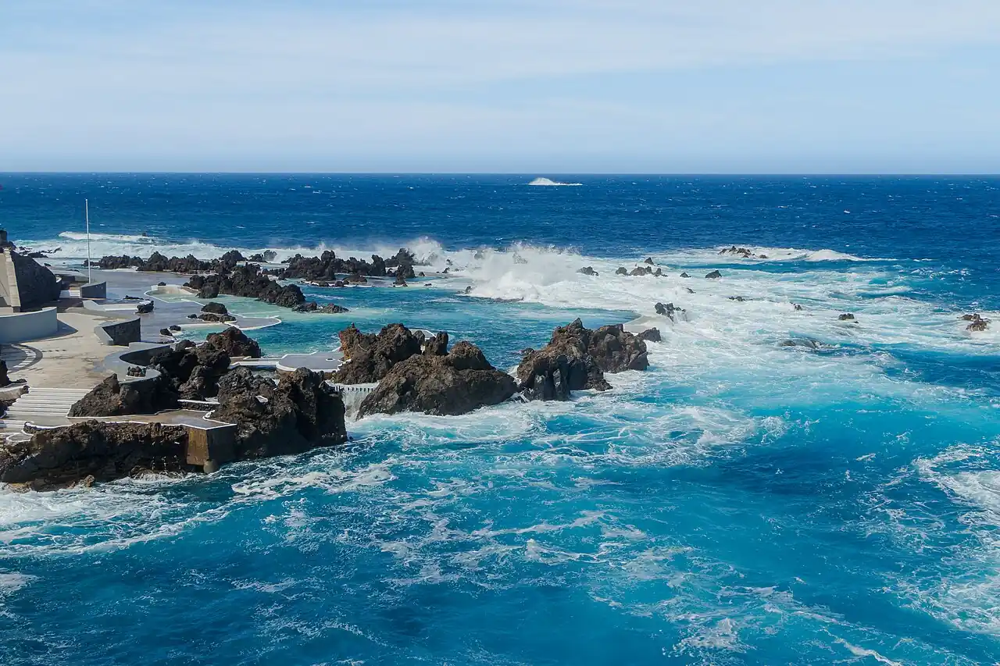

Piscines naturelles de Porto Moniz
Madère, Portugal · baignade

Bassins de roche volcanique remplis par l’océan, à la pointe nord-ouest de Madère. Aménagés avec échelles et surveillance, ils permettent de se baigner dans l’Atlantique à l’abri des vagues.
- Lieu
- Madère, Portugal
- Niveau
- Débutant
- Activités
- baignade
- Type d'eau
- Mer / océan
- Coordonnées
- 32.87, -17.17 (position approximative du secteur)
Dangers à connaître
- Vagues qui débordent dans les bassins par forte houle de nord.
- Roche volcanique glissante et coupante.
Le conseil d'Ocean Buddy
Par grosse houle, les vagues passent par-dessus les rochers : écoute le personnel et reste loin du bord côté océan.
Ouvrir dans Ocean Buddy Télécharger sur l'App Store
Source : Fiche Ocean Buddy · septembre 2026 · à vérifier localement.